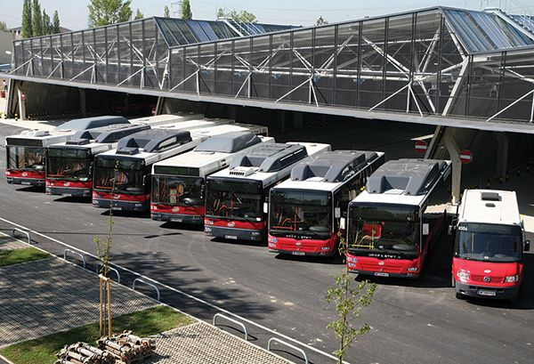

Conheça os principais serviços disponíveis e saiba como solicitar cada atendimento.

Emissão de primeira e segunda via do cartão eletrônico de passagens do transporte municipal.
Orientações para cadastro e renovação do benefício de meia-passagem ou gratuidade escolar.
Emissão de credenciais de transporte gratuito para idosos acima de 65 anos e pessoas com deficiência.
Consultas sobre quadros horários, trajetos oficiais e pontos de integração urbana.
Informações sobre centrais de atendimento ao passageiro, bilheterias e achados e perdidos.
Canais para registro de reclamações, sugestões sobre horários e conservação da frota.
A legislação brasileira garante direitos essenciais aos passageiros do sistema público:
Para solicitar cartões de transporte ou gratuidades, tenha em mãos:
Atenção: as regras específicas de emissão de bilhetes e recadastramentos periódicos são geridas pela empresa operadora ou autarquia de trânsito do município.
Procure os postos centrais de atendimento das empresas de ônibus, o guichê de atendimento do terminal urbano principal ou a Secretaria de Trânsito e Transporte da sua cidade.